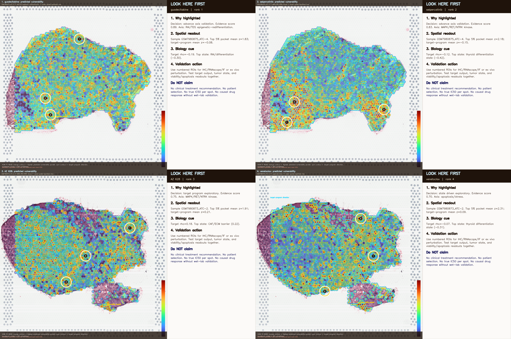
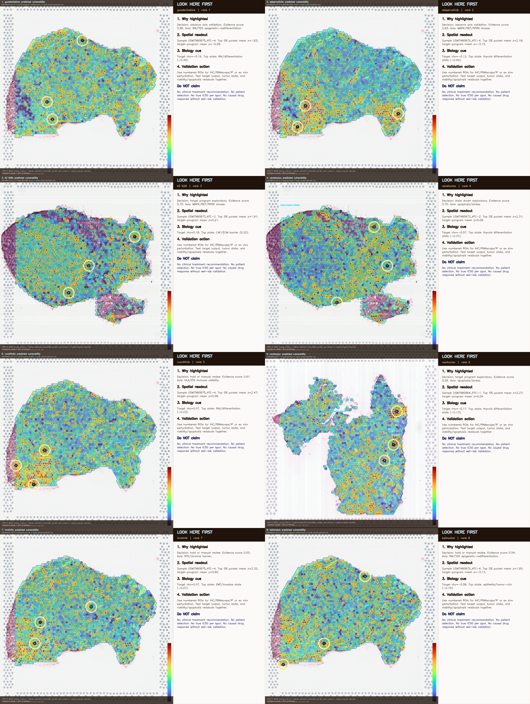
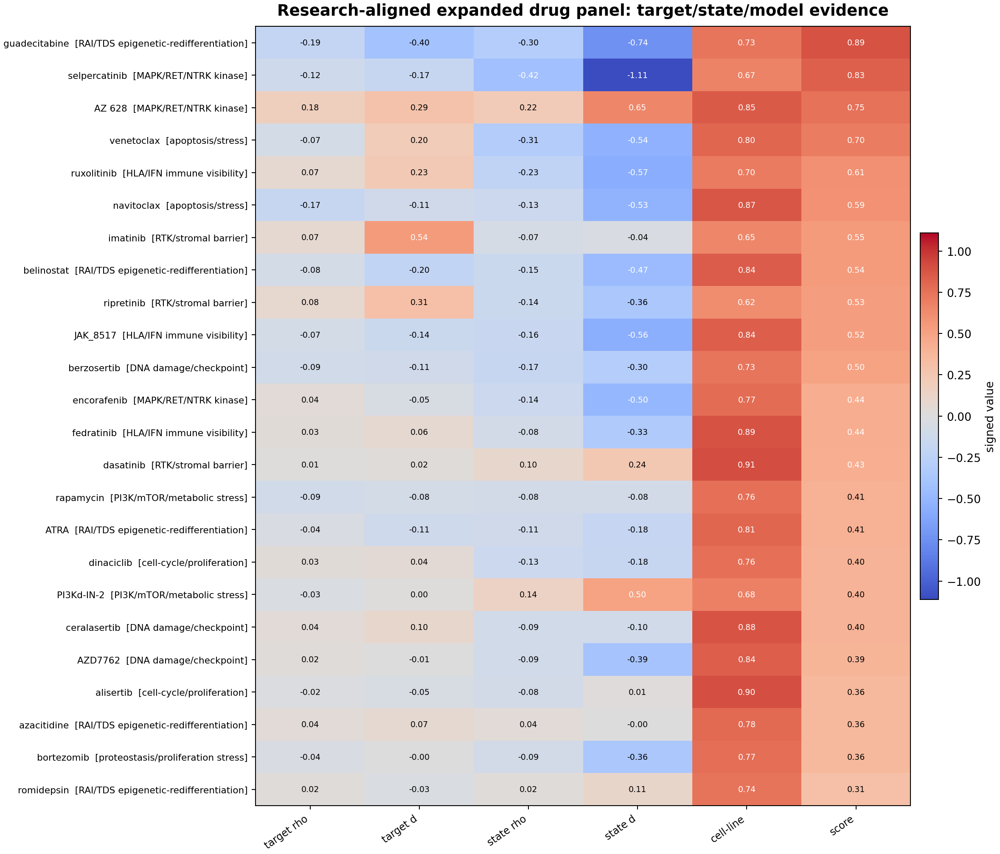
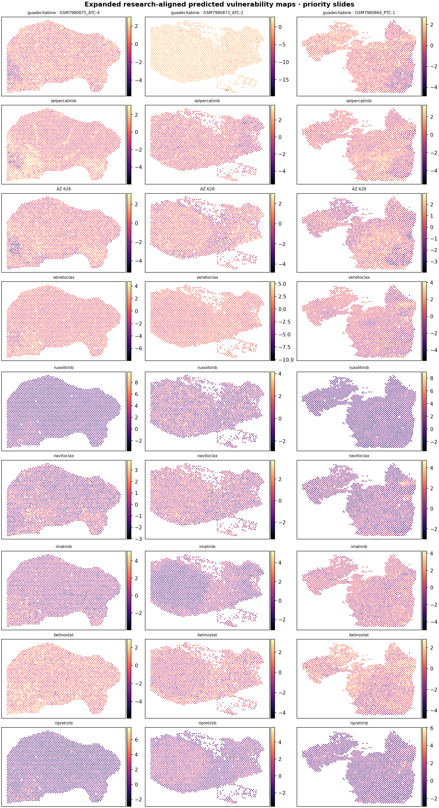

papers_hub_2026_0509 · paper1-style dossier layer · generated 2026-05-09
데이터 정의서 / Data Definition Sheet — Research-Aligned Spatial Drug Expansion
이 페이지는 원본 내용을 유지하면서, 첫 화면에 분석 데이터 정의서, 현재 claim boundary, 읽는 순서, figure/table 해설을 새로 붙인 2026-05-09 리뉴얼 버전입니다. 모든 그림은 “어떤 데이터가 들어갔는지 / 어떻게 읽는지 / 어디까지 주장 가능한지”를 같이 표시합니다.
6figures / visuals
2tables explained
4flow headings
Spatial / Trajectorypage family
100%
Current statusContext / caveat support
Claim boundarySpatial pages are valuable for anatomy and failure-mode explanation, but current GSE250521 evidence is not the primary Paper 1 lock.
Next useUse to explain heterogeneity and caveats, not as the main mechanism proof.
0. Analysis Inputs
data dictionary firstTCGA-THCA TCGA-THCA HM450 K2 / PRJEB11591 GSE250521 AFND / Korean HLA references 8-gene mini-index RAI_8 / thyroid differentiation score MAPK output score HLA-II / IFN-gamma module Cohen's d / Spearman rho / Cox HR
| Term | Class | Definition | Where this page uses it |
|---|---|---|---|
| TCGA-THCA | cohort | TCGA thyroid carcinoma cohort; RNA-seq, clinical, mutation, methylation and cBioPortal-derived mutation/clinical slices depending on page. | Paper 1 DM1/DM2 derivation, survival, promoter methylation, driver strata, and several downstream reuse pages. |
| TCGA-THCA HM450 | cohort | Illumina 450K methylation subset used for thyroid-lineage promoter beta values. | Paper 1 Fig 8 and mechanism-layer pages. |
| K2 / PRJEB11591 | cohort | Korean PTC RNA-seq cohort used as an external Korean replication/calibration anchor. | Korean portability, mini-index calibration, and NBNR/DM-like comparisons. |
| GSE250521 | cohort | Thyroid spatial transcriptomics / Visium resource spanning thyroid progression contexts. | Spatial validation, spatial failure/rescue, lag pockets, and image-DM1 spatial checks. |
| AFND / Korean HLA references | reference | Allele-frequency and literature-derived HLA reference material; some rows are registry/approval-gated rather than executable analysis inputs. | Paper 2 HLA and Paper 4 GD/Pan-Asian backlog pages. |
| 8-gene mini-index | score | Curated thyroid-lineage/dedifferentiation panel used to split molecular dark-matter states; higher DM1-like score means more dedifferentiated. | Paper 1 core axis and many downstream transfer/image/vulnerability pages. |
| RAI_8 / thyroid differentiation score | score | Mean z-score over thyroid differentiation genes; direction is differentiated / RAI-avid unless explicitly negated. | Lineage preservation/collapse comparisons and treatment-rationale pages. |
| MAPK output score | score | MAPK pathway output or driver-class proxy used to compare pathway activity against thyroid-lineage scores. | Paper 1 Fig 8 mechanism extensions v9-v18 and PRISM/DepMap overlays. |
| HLA-II / IFN-gamma module | score | Inflammation / antigen-presentation module used for HT-overlap and ICI-vulnerability context. | Paper 2/Paper 3/Paper 4 HLA and immune-context pages. |
| Cohen's d / Spearman rho / Cox HR | statistic | Effect-size and association statistics reported from local TSV/JSON/HTML tables; direction must be read from each table caption. | Most dossier and validation pages. |
| PRISM / DepMap | external screen | Cancer dependency/drug-screen resources used for vulnerability prioritization and MAPK-inhibitor overlays. | Paper 1/9/10/11 synthetic-lethality and druggability pages. |
1. Reading Flow
section logicFlow summary: Research-Aligned Drug Expansion → How To Read The Guided Panels → Top Expanded Panel → Evidence Figures
2. Figure Explanations
preview; full gallery below
Figure 01 · Spatial / anatomy evidence
fig50_cv2_reader_guided_top4_callouts.png
Reader guided CV2 callout panels
- Data entered
- Inline page visual; source path and caption are the binding provenance row for this audit.
- How to read
- Read the tissue region, spot-level module score, and neighborhood definition together.
- Boundary
- Spatial pages are current as context/caveat support unless explicitly promoted by the current situation matrix.
- Source match
- No same-basename result match listed.

Figure 02 · Spatial / anatomy evidence
fig51_cv2_reader_guided_expanded_callout_atlas.png
Expanded reader guided callout atlas
- Data entered
- Inline page visual; source path and caption are the binding provenance row for this audit.
- How to read
- Read the tissue region, spot-level module score, and neighborhood definition together.
- Boundary
- Spatial pages are current as context/caveat support unless explicitly promoted by the current situation matrix.
- Source match
- No same-basename result match listed.

Figure 03 · Matrix / clustering evidence
fig45_research_aligned_evidence_matrix.png
Evidence matrix
- Data entered
- Inline page visual; source path and caption are the binding provenance row for this audit.
- How to read
- Read the row/column annotations and color scale first; the visual is about structure, not a single p-value.
- Boundary
- Cluster appearance should be paired with the linked table or statistic before manuscript-level use.
- Source match
- No same-basename result match listed.

Figure 04 · Effect-size / forest evidence
fig46_research_aligned_axis_scorecard.png
Axis scorecard
- Data entered
- Inline page visual; source path and caption are the binding provenance row for this audit.
- How to read
- Read the point estimate, confidence interval, cohort label, and direction together before reusing the claim.
- Boundary
- A narrow CI supports precision, but cohort definitions and endpoint choice still set the claim boundary.
- Source match
- No same-basename result match listed.

Figure 05 · Effect-size / forest evidence
fig47_research_aligned_priority_spatial_maps.png
Priority spatial maps
- Data entered
- Inline page visual; source path and caption are the binding provenance row for this audit.
- How to read
- Read the point estimate, confidence interval, cohort label, and direction together before reusing the claim.
- Boundary
- A narrow CI supports precision, but cohort definitions and endpoint choice still set the claim boundary.
- Source match
- No same-basename result match listed.

Figure 06 · Spatial / anatomy evidence
fig49_research_aligned_decision_board.png
Decision board
- Data entered
- Inline page visual; source path and caption are the binding provenance row for this audit.
- How to read
- Read the tissue region, spot-level module score, and neighborhood definition together.
- Boundary
- Spatial pages are current as context/caveat support unless explicitly promoted by the current situation matrix.
- Source match
- No same-basename result match listed.
3. Table Explanations
embedded data rows4. Related Renewed Pages
same family / same prefixspatial_drug_cv2_overlay_gallery spatial_drug_famous_panel spatial_drug_target_celltype_overl spatial_drug_vulnerability_applica spatial_drug_vulnerability_pilot thca_cnv_spatial_immune_decision_2 trajectory
Current situation: current_situation_2026_0509.html · Source page: project/papers_hub_2026_0509/spatial_drug_research_aligned_expansion.html · Renewed page: project/papers_hub_2026_0509/spatial_drug_research_aligned_expansion.html · Voice-protected manuscript sections were not edited.
{kind=link}
{kind=link}
{kind=link}
{kind=link}
{kind=link}